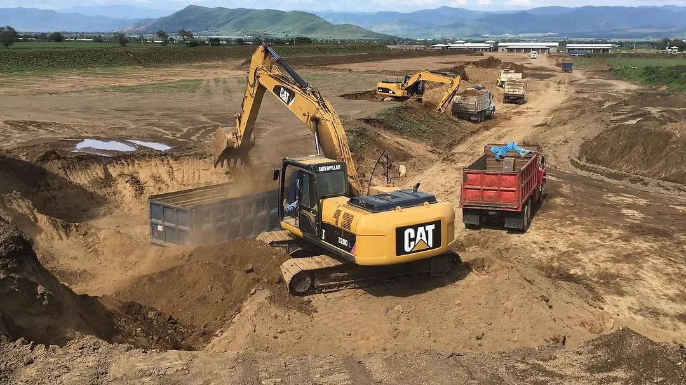
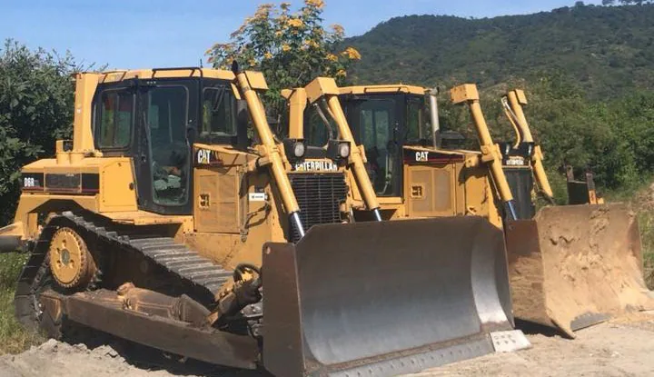
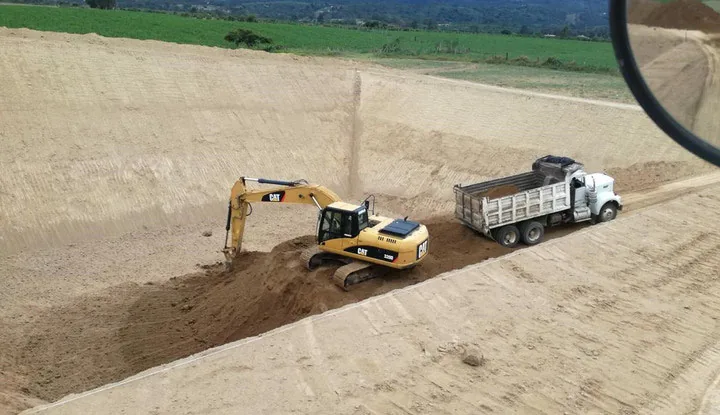
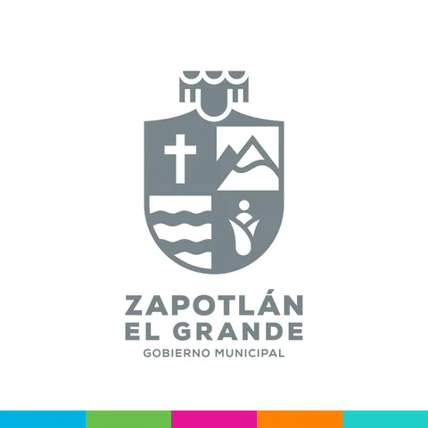
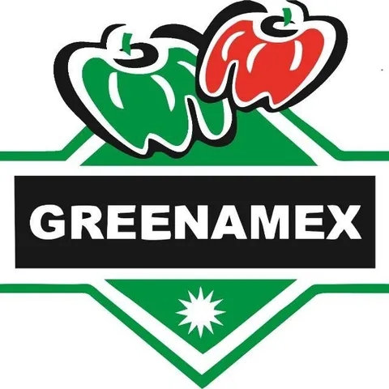
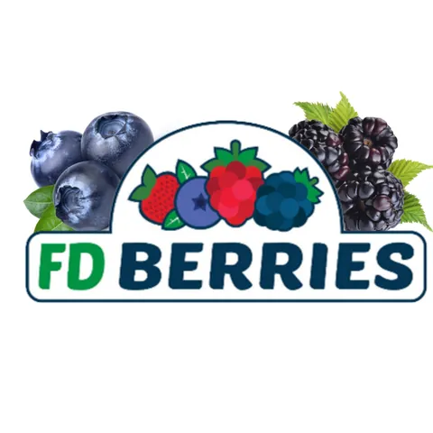

Asesoría de Crédito de Vivienda
Facilitamos el proceso de adquisición de tu vivienda con asesoría certificada para INFONAVIT y FOVISSSTE.
Construcción · Infraestructura · Renta de maquinaria
Tu socio confiable en construcción de viviendas, infraestructura y renta de maquinaria pesada de alto rendimiento.
Qué hacemos
Soluciones llave en mano, desde desarrollo inmobiliario hasta infraestructura pesada.
Preparación de superficies, despalme, nivelación y compactación de plataformas para invernaderos y malla sombra; movimientos de tierra, obras de contención, infraestructura pluvial, empaques agrícolas y oficinas operativas.
Excavación, cortes, rellenos, conformación de terraplenes, acondicionamiento de terrenos, acarreo de material, compactación mecánica y habilitación de áreas para instalaciones productivas y obra civil.
Construcción, rehabilitación y conservación de vialidades; pavimentos de concreto hidráulico, asfalto y empedrado ahogado; caminos de acceso, puentes, vados, guarniciones, banquetas y obras de drenaje.
Redes de agua potable y drenaje sanitario, colectores, canales pluviales, diques de captación, reservorios, plantas de tratamiento y obras complementarias de saneamiento.
Construcción, ampliación, adaptación y mantenimiento de naves industriales, empaques, bodegas, oficinas, centros de salud, planteles educativos, edificios de servicios y espacios comunitarios.
Diseño arquitectónico y ejecutivo, construcción de viviendas unifamiliares, residencias, ampliaciones, remodelaciones, locales comerciales y desarrollos inmobiliarios.
Planeación, estimaciones, presupuestos, cuantificaciones, control de avances, coordinación de especialidades, seguimiento físico de obra y administración técnica de proyectos.
Planeación, administración y ejecución técnica para contratos agroindustriales y obra pública.
Revisión del sitio, alcance y requerimientos.
Planos, cuantificación de conceptos y costos.
Etapas, cuadrillas, materiales y maquinaria.
Supervisión técnica, control de avances y estimaciones.
Verificación del alcance y entrega documentada.
Equipo técnico, operadores especializados y cuadrillas de obra.
Herramientas de diseño y control: AutoCAD · Civil 3D · Revit · Neodata · Microsoft Project · Microsoft Excel · BIM.
Planos ejecutivos, modelado y documentación arquitectónica, presupuestos y seguimiento físico-financiero.

Trayectoria
Desde 2015. Da clic en una obra para ver sus detalles.
Clientes y trabajos ejecutados, organizados por tipo de obra.
| Cliente / contratante | Obra o trabajos ejecutados |
|---|---|
| Agrícola ZAP, S.A. de C.V. | Construcción de plataformas agrícolas para invernaderos de chile morrón. |
| Agrícola ZAP, S.A. de C.V. | Construcción de diques para captación de agua pluvial. |
| Agrícola ZAP, S.A. de C.V. | Construcción de nave industrial para empaque agrícola. |
| Agrícola ZAP, S.A. de C.V. | Cimentaciones y adecuaciones para áreas de empaque. |
| Greenamex, S. de R.L. de C.V. | Construcción de plataformas agrícolas para invernaderos de chile morrón. |
| Greenamex, S. de R.L. de C.V. | Ampliación de empaque agrícola y construcción de oficinas. |
| Greenamex, S. de R.L. de C.V. | Construcción de canales pluviales en zona de invernaderos. |
| Greenamex, S. de R.L. de C.V. | Construcción de plataformas adicionales para invernaderos. |
| Invernadero Urzúa | Plataformas agrícolas, ampliaciones, muros de contención y movimientos de tierra. |
| Agrícola Paredes S.A.P.I. de C.V. | Preparación y construcción de plataformas para malla sombra. |
| Agrícola Paredes S.A.P.I. de C.V. | Mantenimiento y adecuación de plataformas agrícolas. |
| Agro JCS | Nivelación de plataformas agrícolas. |
| Viveros Vega Produce | Nivelación de plataformas agrícolas. |
| Productora Sweet Earth · Sayula | Nivelación y compactación mecánica para invernaderos. |
| Cliente / contratante | Obra o trabajos ejecutados |
|---|---|
| San Juanito de Escobedo | Calle 16 de Septiembre: pavimentación con empedrado ahogado en concreto, drenaje sanitario, machuelos y banquetas. |
| Zapotlán el Grande | Suministro de mezcla asfáltica en frío para mantenimiento de vialidades en colonia La Providencia. |
| Zapotlán el Grande | Rehabilitación del crucero General Ignacio Mejía y Manuel M. Diéguez Lara; pavimento de concreto, drenaje y agua potable. |
| Zapotlán el Grande | Pavimentación de calle Esteban Cibrián con concreto hidráulico. |
| Zapotiltic | Rehabilitación y pavimentación asfáltica de calles Orquídea y Acacia. |
| Zapotiltic | Rehabilitación de calles en colonia Primavera y trabajos de infraestructura vial. |
| Zapotiltic | Rehabilitación y mantenimiento de portales municipales. |
| Gómez Farías | Ampliación a cuatro carriles del acceso carretero a San Andrés Ixtlán. |
| NatureSweet · Desert Glory | Construcción del tramo carretero Desert Glory – El Platanar. |
| San Miguel · Desert Glory | Construcción de camino carretero y puente de acceso. |
| Tuxcacuesco | Construcción de primera y segunda etapa del camino Tuxcacuesco – El Camichín. |
| Mexticacán | Conservación del camino Mexticacán – El Santuario mediante sello y balizamiento. |
| Tuxcacuesco | Construcción de puentes en El Reparito y Zenzontla. |
| Tuxcacuesco | Diseño y construcción de puente-vado sobre el río Tuxcacuesco. |
| Cliente / contratante | Obra o trabajos ejecutados |
|---|---|
| Copala · Tolimán | Construcción de relleno sanitario. |
| Copala · Tolimán | Construcción de planta de tratamiento de aguas residuales. |
| Copala · Tolimán | Construcción de línea de drenaje sanitario. |
| Copala · Tolimán | Construcción de línea eléctrica para infraestructura comunitaria. |
| Zapotitlán de Vadillo | Construcción de centro de salud de primer contacto. |
| Zapotlán el Grande | Construcción de centro de atención integral de salud mental. |
| Universidad de Guadalajara | Construcción de Preparatoria Regional, extensión Tuxcacuesco. |
| Instituto Tecnológico de Ciudad Guzmán | Diseño y remodelación del patio y explanada principal. |
| Instituto Tecnológico de Ciudad Guzmán | Obras de mantenimiento y adecuaciones en instalaciones del plantel. |
| Zapotitlán de Vadillo | Diseño y remodelación de jardín principal y espacios públicos. |
| Zapotitlán de Vadillo | Diseño y construcción de área recreativa y trabajos en templo mayor. |
| Comisión Federal de Electricidad | Rehabilitación de edificios, estacionamiento, oficinas, casetas e instalaciones complementarias. |
| Comisión Federal de Electricidad | Adecuaciones y mejoramiento de instalaciones en zonas Zapotlán, Sayula y Tuxpan. |
| CAPECE · Jalisco | Rehabilitación y mantenimiento de planteles educativos, instalaciones, impermeabilización y sanitarios. |
| Zapotlán el Grande | Mantenimiento de sanitarios en Escuela Primaria Federico del Toro. |
≈ 65 proyectos residenciales en Zapotlán el Grande y municipios de la región desde 2015.
| Cliente / contratante | Obra o trabajos ejecutados |
|---|---|
| Clientes particulares · Jalisco | Diseño y construcción de viviendas unifamiliares y residenciales. |
| Clientes particulares · Jalisco | Ampliaciones, remodelaciones, adecuaciones y mantenimiento residencial. |
| Fraccionamiento Los Cedros | Construcción de muro perimetral en Ciudad Guzmán. |
| Autopartes Garibaldi | Diseño y construcción de sucursal comercial en Ciudad Guzmán. |
| Clientes privados | Diseño y desarrollo de proyectos arquitectónicos y ejecutivos comerciales. |
| Proyectos residenciales | Casa Lomas del Barro, Casa Callejones, Casa Maple y Casa Lázaro Cárdenas. |
| Edificación comercial y de servicios | Edificio de Departamentos Zapotiltic y Núcleo Médico HZ. |
Renta
Equipos de última generación listos para tu obra. Selecciona los que necesites para tu cotización.
| Categoría | Equipo |
|---|---|
| Excavadoras | CAT 320 D, CAT 320 DL, CAT 336 DL y CAT 320 D con martillo hidráulico. |
| Tractores de orugas | Bulldozer D6C; tractores CAT D6R, D6R XL y D6R Serie III. |
| Conformación de superficies | Motoconformadora 120 H; cargador frontal 926 E. |
| Retroexcavación y carga | Retroexcavadoras CAT 416 E y Case 580M; minicargador CAT 262D. |
| Compactación | Vibrocompactadores Wacker y Dynapac CA-15. |
| Transporte de materiales | Camiones de volteo de 7 m³ y 14 m³; unidades Freightliner Columbia y Kenworth. |
| Abastecimiento y logística | Camión pipa de 18,000 L; autotanque de 35,000 L; tractocamiones y equipos cama baja / lowboy. |


Disponibilidad: excavación, conformación, compactación y traslado para proyectos de infraestructura.
Confianza
Empresas e instituciones que confían en GIYC.



Contacto
Llámanos, escríbenos o déjanos un mensaje. ¡Estamos listos para empezar!
Lunes a viernes, 7:30 am a 6:00 pm
Sábados, 7:30 am a 12:00 pm
| Nombre comercial | GIYCSA · García Inmobiliaria y Construcción |
|---|---|
| Razón social | GIYC, S.A. de C.V. |
| Representante legal | Arq. José Salvador García Guzmán |
| RFC | GIY1506302X2 |
| Constitución | 30 de junio de 2015 |
| Registro de contratista SIOP | C-0391 |
| Domicilio matriz | Federico del Toro núm. 591, Col. Centro, Ciudad Guzmán, Jalisco, C.P. 49000 |
| Sucursal | Hidalgo núm. 805, Col. Centro, Ciudad Guzmán, Jalisco |
| Teléfonos | (341) 412 9265 · (341) 412 6048 |
| 33 1024 4077 | |
| Correo electrónico | giycsa@hotmail.com |
| Horario | Lunes a viernes, 7:30 am a 6:00 pm · Sábados, 7:30 am a 12:00 pm |
| Cobertura | Estado de Jalisco, México |